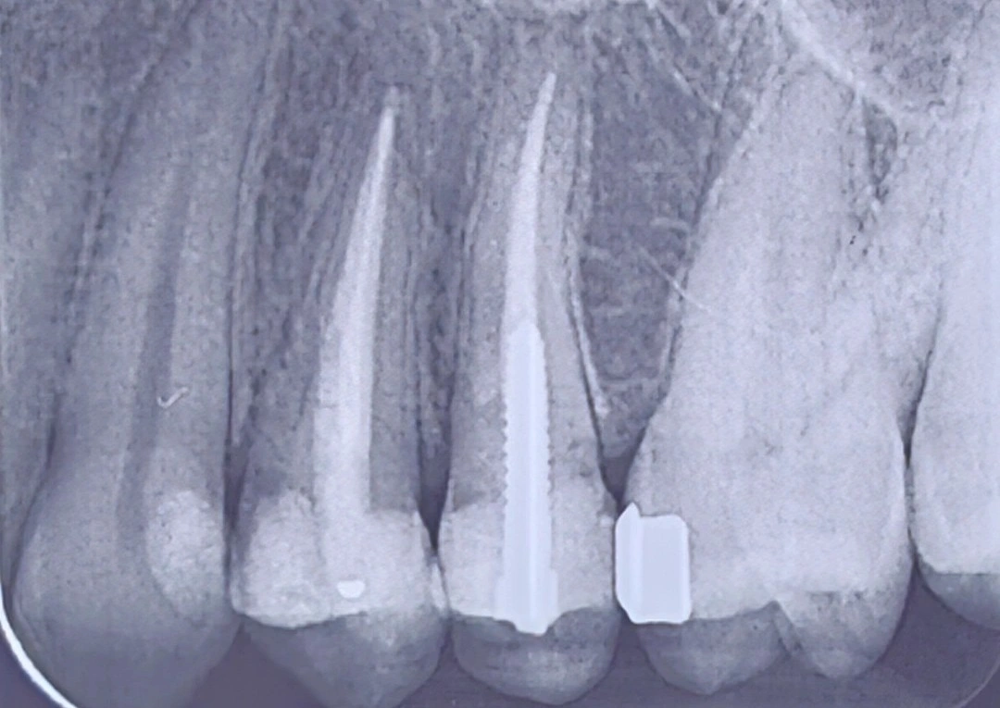

Chairside 27
وقتی توصیهٔ همکارِ قبلی، خودش یک دادهٔ تشخیصی است

شرحِ مراجعه. بیمار برای گذاشتنِ روکش روی دندانِ پریمولارِ اول مراجعه کرده بود. ترمیمِ کامپوزیتِ دندان قبلاً توسط همکارِ دیگری انجام شده بود.
در معاینهٔ کلینیکی، وضعیتِ نسجِ دندان خوب بود. آنقدر دیواره و ارتفاعِ باقیمانده وجود داشت که بعید بود برای تراش و رسیدن به ferrule کافی به مشکل بخورم. اما رادیوگرافی چیزِ دیگری نشان داد: ترمیم خیلی بزرگتر از چیزی بود که در معاینه به نظر میرسید، و نسجِ واقعیِ دندان کمتر از آن بود که فکر میکردم. همین تناقضِ بینِ نمای کلینیکی و رادیوگرافی نقطهٔ شروعِ بررسی شد.
پیش از هر تصمیمی، از بیمار پرسیدم هدفش از روکش چیست و چطور به این فکر افتاده. گفت همکاری که کامپوزیت را انجام داده به او گفته وضعیتِ دندان بسیار بد است و حتماً باید روکش شود.
ارزیابیِ کلینیکی. این توصیه برای من خودش یک دادهٔ تشخیصی بود. کسی که یک ترمیمِ ادهزیو انجام میدهد و بعد روکش را راهِ نجاتِ دندان معرفی میکند، عملاً روکش را جبرانکنندهٔ نسجِ ازدسترفته میداند. در حالی که روکش نسج اضافه نمیکند و گیر و پیشآگهیاش تماماً به همان نسجِ باقیمانده وابسته است. این تناقض نشان میدهد که احتمالاً کیفیتِ ترمیمِ زیرین آنقدرها هم خوب نبوده - انگار همکار هم در حینِ کار چیزی دیده که نگرانش کرده. هر دو نکته را در تصمیم لحاظ کردم.
از این نقطه، زنجیرهٔ تصمیم روشن بود:
- روی کامپوزیتِ موجود روکش نمیگذارم؛ هم برای سلامتِ نسجِ زیرِ ترمیم و هم چون احتمالاً کیفیتِ خودِ ترمیم چندان مطلوب نیست - به نظر میرسد همکارِ قبلی میخواسته از روکش بهعنوانِ محافظی برای همین ترمیم استفاده کند. تا وقتی از این دو مطمئن نباشم، پوشاندنِ آن با روکش یعنی ساختنِ پروتز روی پایهای که ارزیابی نشده است.
- پس اگر روکش در کار باشد، تخلیهٔ کاملِ کامپوزیت و بازسازیِ پایه اجباری است.
- و اینجاست که وضعیتِ ظاهراً مطلوبِ نسجِ دندان اعتبارش را از دست میدهد. آنچه در معاینه ارتفاع و دیوارهٔ کافی به نظر میرسید، بخشِ عمدهاش کامپوزیت بود. با تخلیهٔ آن، به احتمالِ زیاد به مارجینِ عمیقِ سابژنژیوال و ferrule ناکافی میرسیم.
- در آن حالت دو مسیر باقی میماند: crown lengthening برای رسیدن به ferrule قابلِ قبول، یا کشیدنِ دندان اگر جراحی آسیبِ غیرقابلِ قبولی به استخوان و بافتِ ساپورتکننده بزند.
نتیجهگیری و Clinical Tip. دندان در وضعیتِ فعلی بیعلامت و در فانکشن بود. یعنی چیزی که این کیس را به سمتِ جراحی یا کشیدن میبُرد، خودِ مداخلهٔ من بود، نه وضعیتِ امروزِ دندان. بنابراین تصمیم بر این شد که فعلاً به دندان دست نزنیم.
به بیمار بهروشنی توضیح دادم که روی این ترمیم روکش نمیگذارم، که اگر بخواهیم پیش برویم کامپوزیت باید تخلیه شود، و اینکه در آن صورت احتمالِ رسیدن به جراحیِ لثه یا حتی کشیدن وجود دارد. مداخله تا زمانِ بروزِ علامت، شکستِ ترمیم، یا نیازِ اندو به تعویق افتاد.
این تصمیم مطلق نیست و وابسته به کیس است. اگر شواهدِ پوسیدگیِ زیرِ ترمیم، ترکِ فعال و ...وجود داشت، تعویقِ مداخله توجیهی نداشت و باید ترمیم باز میشد.
️Clinical Tip: ارزیابیِ ferrule و دیوارهٔ باقیمانده را روی نمای کلینیکیِ یک دندانِ ترمیمشده انجام ندهید. آنچه میبینید ممکن است ساختارِ دندان نباشد. و وقتی توصیهٔ درمانیِ قبلی با اصولِ ادهزیو در تناقض است، آن توصیه خودش بخشی از دادههای تشخیصیِ شماست. گاهی درستترین مداخله این است که دندانِ بیعلامت را واردِ چرخهٔ درمانهای تهاجمیِ متوالی نکنیم.
محتوای این صفحه برای استفادهٔ آموزشی دندانپزشکان و دانشجویان دندانپزشکی تهیه شده است.